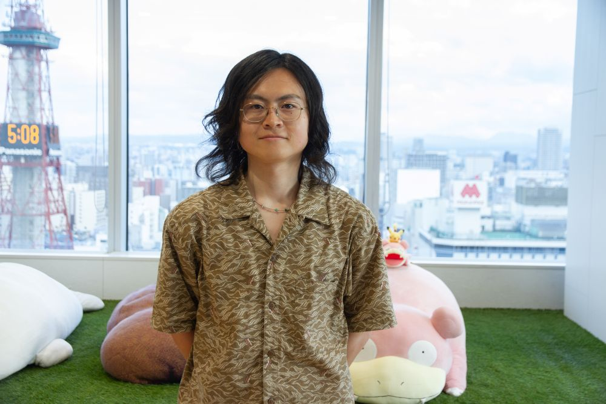
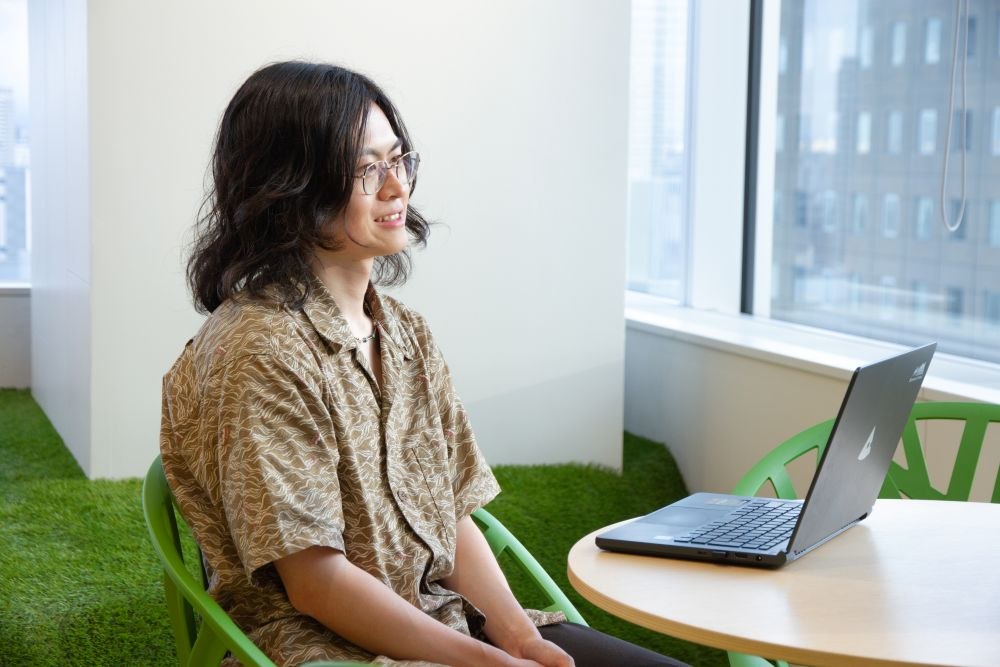
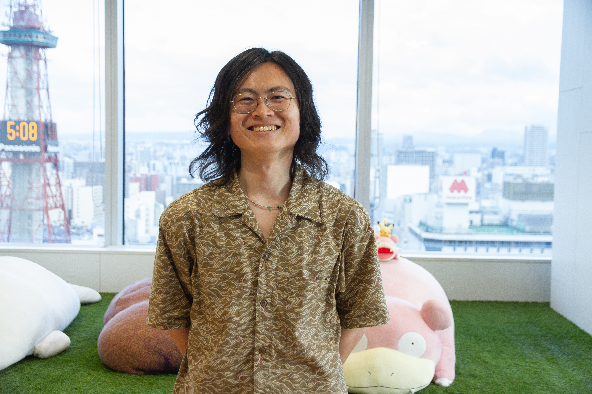

原動力は、ファッションへの探求心。
未経験からプロダクトを牽引するリーダーの軌跡

鎌田 渓
就活時のコロナ禍を機にプログラミングを独学し、ダイアモンドヘッドに入社。入社以来4年にわたり商品情報管理システム（PCS）に携わり、現在はプロダクトマネジメントチームのリーダーを務める。ファッションと北海道コンサドーレ札幌をこよなく愛し、休日には両親を巻き込んでアウェイ遠征に出かける熱狂的な一面も。
「コーディング力」だけがエンジニアの価値ではない。未経験からスタートし、現在はアパレルECの要である商品情報管理システム（PCS）のチームリーダーを務める鎌田さん。彼がプロジェクトの中心的な存在へと成長できた背景には、ファッションへの深い愛情と、複雑な業務の仕組みを地道に紐解くコミュニケーション力がありました。AIがコードを生成する時代に、人間だからこそ発揮できるエンジニアの価値について話を聞きました。
1. ファッションとスポーツへの熱量
鎌田：ファッションに関しては、入社当初はキレイめな服装が中心でしたが、社内の服好きのメンバーと交流するうちに感性が磨かれ、幅が広がりました。最近は印象を大きく変えられるメガネに注目して収集しています。店舗での交流から新たな繋がりも生まれ、人生を豊かにする趣味の一つになっています。
北海道コンサドーレ札幌の応援には、会社の福利厚生である観戦チケットを活用し、ホーム戦は毎回スタジアムへ足を運んでいます。サッカーを通じて社内外に仲間ができ、一体感を持って応援できることに魅力を感じています。また、当初は私一人で観戦していましたが、現在は両親も熱狂的なサポーターとなり、一緒にアウェイ遠征へ行くこともあります。遠征が家族旅行の代わりとなり、良い思い出作りに繋がっています。
鎌田：就活の時期に、社会で活かせるスキルを持ち合わせていないことに気づき、コロナ禍で自宅学習が可能だったプログラミングの勉強を始めたのがきっかけです。手に職をつける意味でも良い経験になると思いました。
ダイアモンドヘッドを知ったのは、大学時代にJリーグの試合会場でデータを収集するアルバイトをしていた時です。スタジアムの看板の中で唯一何の会社かわからなかったのが「ダイアモンドヘッド」でした。調べてみるとアパレルECのシステム開発を行っている企業だとわかり、学生時代からファッションに関心があったこと、そしてスポーツ活動に理解がある環境に惹かれ、入社を志望しました。

2. 「点の知識」では通用しない壁
鎌田：はい。入社前の研修や独学で基礎知識は習得したつもりでしたが、実際の業務では通用しない場面が多くありました。学習だけではどうしても「点の知識」にとどまってしまい、大規模な業務システムの一連の流れや全体像を掴むことに苦労しました。
鎌田：まずは基本となるコーディングの反復練習を重ねて技術的な土台を作りました。その過程で、エンジニアにとって真に重要なのは「情報の収集・整理と、その組み立て方」であることに気づきました。以降は、現場で実際に情報を集め、業務フローを整理し、それを自身の開発へ落とし込むサイクルを体系的に学んでいきました。
さらに、システム全体を俯瞰するにはITインフラの知識も不可欠だと感じ、社内のAWS勉強会への参加や資格取得を通じてインプットの幅を広げました。こうした取り組みが、現在のエンジニアとしての地盤に繋がっています。
「点の知識」だけでは業務は動かない。
現場を飛び回り、情報を整理して組み立てる力が、
エンジニアの地盤でした。
3. 複雑な業務の裏側を紐解き、チームを繋ぐ
鎌田：PCSは、商品名や説明文、採寸、素材などの基本情報と画像を保存し、各種ECサイトへ自動連携を行う一元管理システムです。アパレルEC特有の難しさとして、展開するECサイトごとに連携可能なカラー、サイズ、カテゴリ、性別の仕様が全く異なります。
本来、メーカーの担当者様は展開先ごとの仕様を理解し、手作業でデータ変換を行う必要があり、非常に膨大で複雑な業務となります。PCSは、そうした複雑な仕様やルールをシステム側で吸収し、一度の登録で複数サイトへの連携を可能にすることで、クライアントの業務負担を大幅に軽減しています。
鎌田：現在はシステムサービス部門 SaaSグループのプロダクトマネジメントチームのリーダーとして、動画登録などの新機能開発や、体制改善プロジェクトの進行管理を主に担当しています。新機能の要件を説明するための資料作成や、ミーティングでの方向づけなどの業務が増え、入社当初と比較すると自らコーディングを行う機会は減少しました。
鎌田：1、2年で他のプロジェクトへ異動するメンバーも多い中、当初は私もさまざまなシステムを経験してみたいという思いがありました。しかし、入社直後の右も左もわからない時期に、チーム内外のコミュニケーションを円滑にする役割を経験したことで、「特定のプロダクトに関する深い知識を持っていた方が、周囲をよりサポートできる」と気づきました。
チームに不足している役割に徹し、目標に対して周囲を巻き込む力を磨いてきたことが、現在の立ち位置に繋がっていると考えています。

4. AI時代における、人間ならではのコア価値
鎌田：AIの技術は確実に進化を続けていますが、感情や悩みを共有する対話の中でしか汲み取れない、微妙なニュアンスがあると考えています。
開発者が一方的に「便利だ」と思う機能を追加しても、利用者の本質的な課題を解決できないことは多々あります。そうしたニュアンスを同じ人間の立場で感じ取り、利用者の背景や用途を深く分析し、多様な利害関係者を巻き込みながら課題を解決へ導く。そのプロセスにこそ、エンジニアとしての価値があると考えています。
鎌田：現在の立場で、自身に与えられた役割を最大限に全うし、継続して貢献していきたいと考えています。
新しく入社される方でも、「この人なら何か新しいことをやってくれそうだ」と期待させてくれる方とお会いできると嬉しく思います。協調性を持ち、仲間と共に全力でチームを良い方向へ導いていける方と、ぜひ一緒に働きたいです。